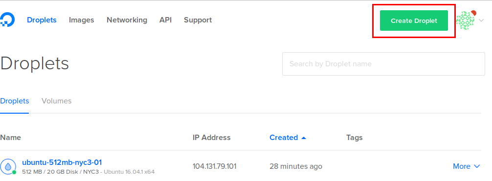
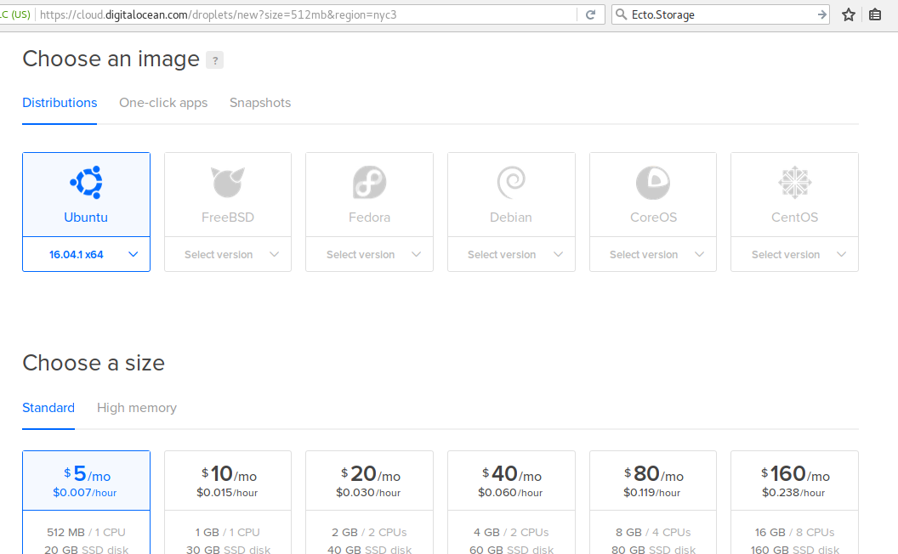
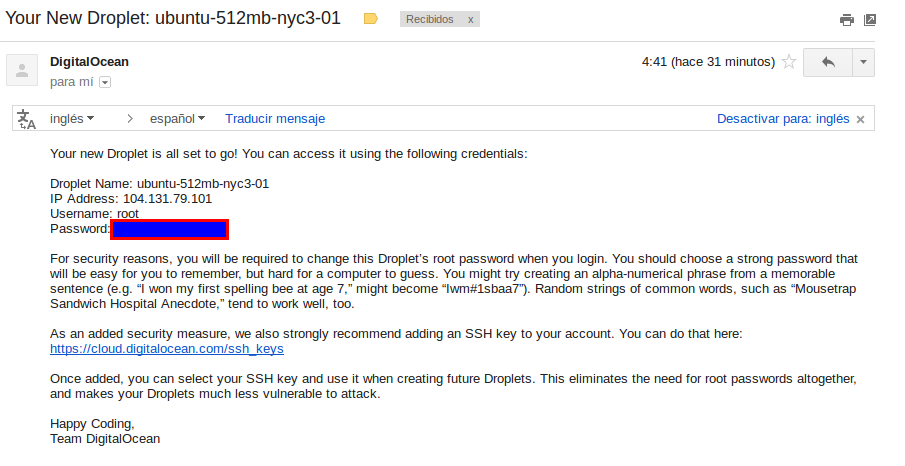
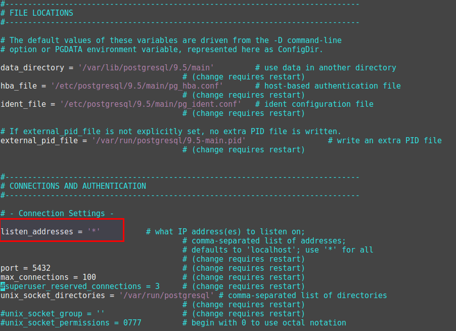
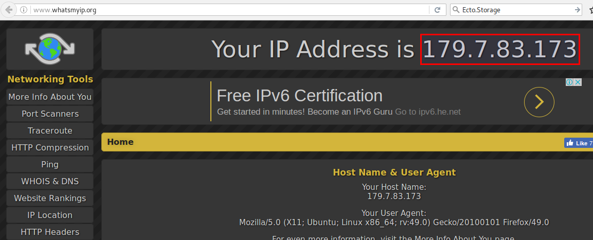
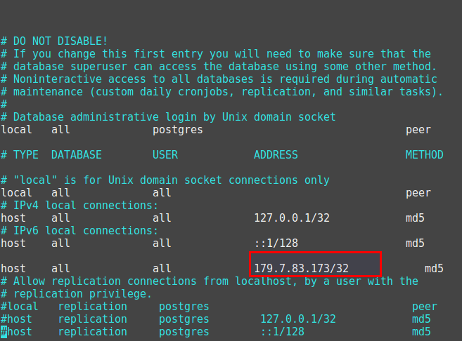
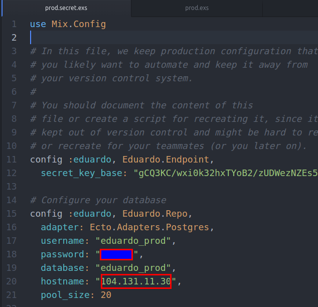
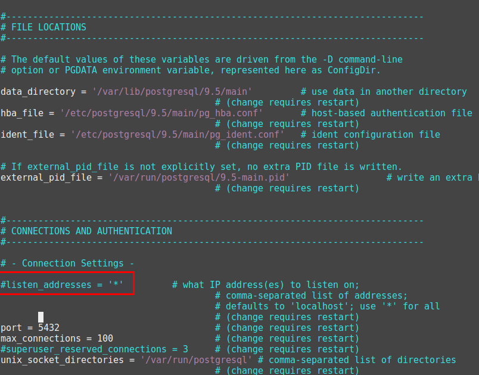
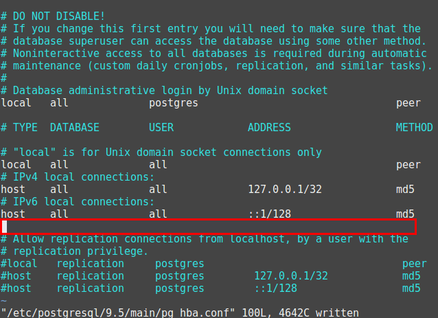
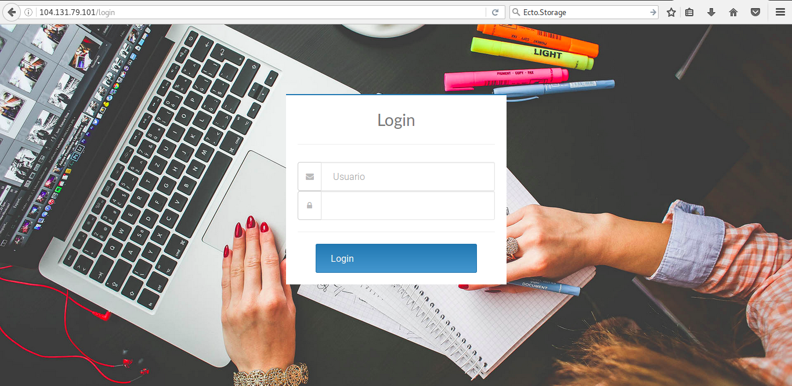

Mediante consola
$ ssh root@104.131.79.101 ### Me pedira contraseña (ademas de pedirme cambiarla) $ sudo locale-gen "en_US.UTF-8" $ sudo apt-get update && upgrade $ sudo apt-get install postgresql postgresql-contrib ##Ahora me logueo como usuario postgres $ sudo su - postgres ##Accedo a la consola de postgres $ psql ##Creo el usuario, contraseña y privilegios postgres=# CREATE USER "proyecto_prod" WITH PASSWORD '123456'; postgres=# ALTER USER "proyecto_prod" CREATEDB LOGIN; postgres=# \q $ exit $ vim /etc/postgresql/9.5/main/postgresql.conf
Modifico el archivo tal como se muestra (:wq es guardar y salir):

$ vim /etc/postgresql/9.5/main/pg_hba.conf
Busco mi ip en un navegador para tener presente


Guardo, salgo (:wq) y reinicio el proceso postgresql con el comando sudo service postgresql restart
para conectar postgresql del servidor

## mix.exs
defp deps do
[{:phoenix, "~> 1.2.1"},
{:phoenix_pubsub, "~> 1.0"},
{:phoenix_ecto, "~> 3.0"},
{:postgrex, ">= 0.0.0"},
{:phoenix_html, "~> 2.6"},
{:phoenix_live_reload, "~> 1.0", only: :dev},
{:gettext, "~> 0.11"},
{:cowboy, "~> 1.0"},
{:comeonin, "~> 2.5"},
{:guardian, "~> 0.12.0"},
{:guardian_db, "~> 0.7.0"},
{:calendar, "~> 0.14.2"},
{:mailgun, "~> 0.1.2"},
{:poison, "~> 2.1", override: true},
{:exrm, "~> 1.0"}]
end
Descargo las dependencias con mix deps.get
config :eduardo, Eduardo.Endpoint, http: [port: 80], url: [host: "localhost", port: 80], root: ".", cache_static_manifest: "priv/static/manifest.json", server: true, version: Mix.Project.config[:version] ... config :phoenix, :serve_endpoints, true
$ npm run deploy ##Construyo los archivos estaticos $ MIX_ENV=prod mix compile ##Compilo para producción $ MIX_ENV=prod mix phoenix.digest ##Precompila los archivos estaticos $ MIX_ENV=prod mix ecto.create ##Crea la base de datos en el servidor $ MIX_ENV=prod mix ecto.migrate ##Migra la estructura de datos $ MIX_ENV=prod mix run priv/repo/seeds.exs ##Añade datos semilla $ MIX_ENV=prod mix release ##Creo el release
vim /etc/postgresql/9.5/main/postgresql.conf

vim /etc/postgresql/9.5/main/pg_hba.conf

sudo service postgresql restart
si ejecutamos rel/eduardo/bin/eduardo console y vamos a localhost el servidor estara funcionando (por ahora todavia en nuestra maquina)
## Con esto envio el release al servidor (Me pedira contraseña) $ scp rel/proyecto/releases/0.0.1/proyecto.tar.gz root@104.131.79.101: $ ssh root@104.131.79.101 ### Me pedira contraseña $ mkdir proyecto $ mv proyecto.tar.gz proyecto/ $ cd proyecto $ tar xfz proyecto.tar.gz
$ sudo nano /etc/systemd/system/proyecto.service ..... [Unit] Description=Proyecto System After=network.target [Service] Type=simple User=root RemainAfterExit=yes Environment=MIX_ENV=prod WorkingDirectory=/root/proyecto/ ExecStart=/root/proyecto/bin/proyecto start ExecStop=/root/proyecto/bin/proyecto stop Restart=on-failure TimeoutSec=300 [Install] WantedBy=multi-user.target
$ systemctl enable proyecto.service $ systemctl start proyecto.service

Gracias ˊ・ω・ˋ